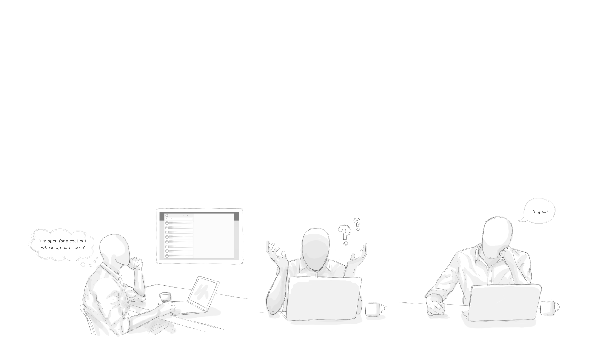
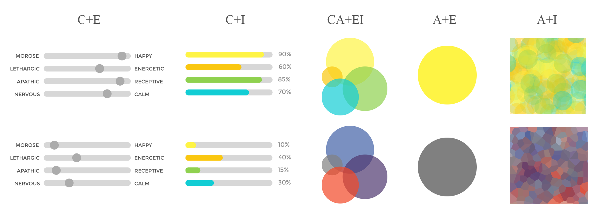
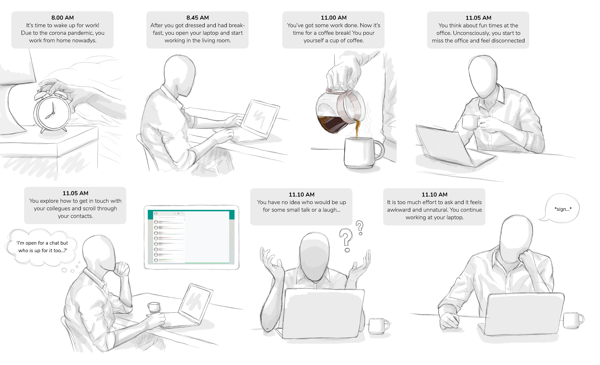
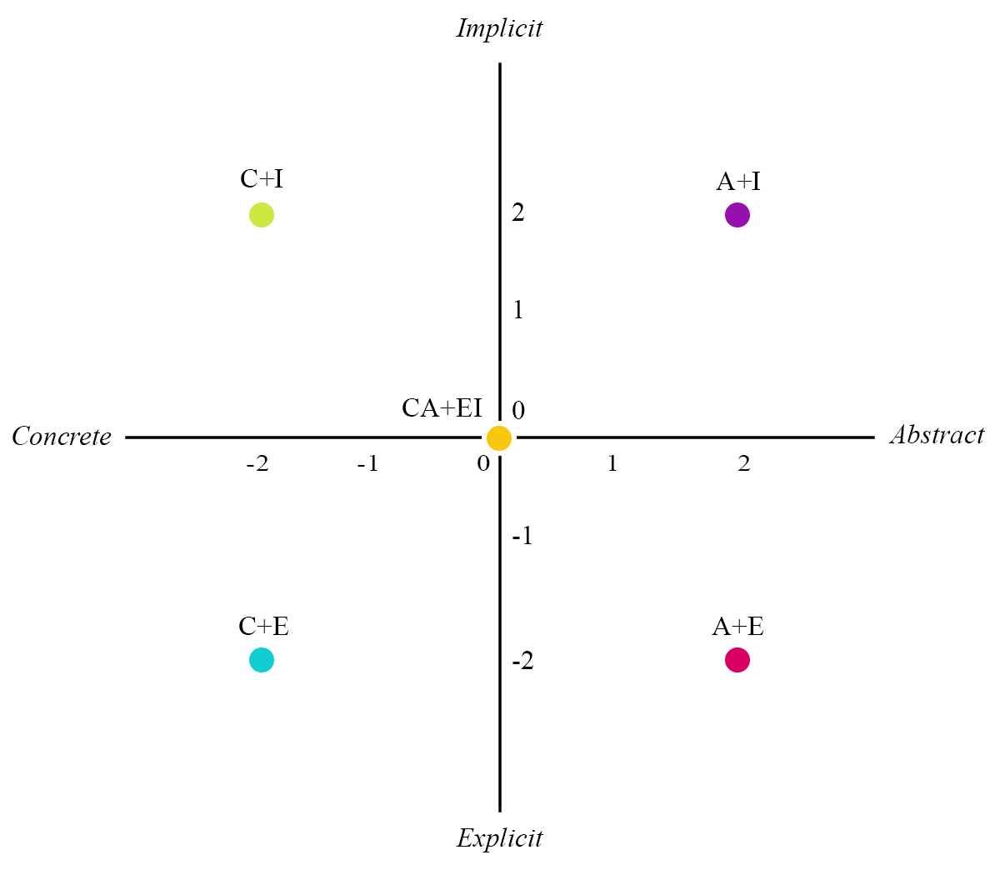
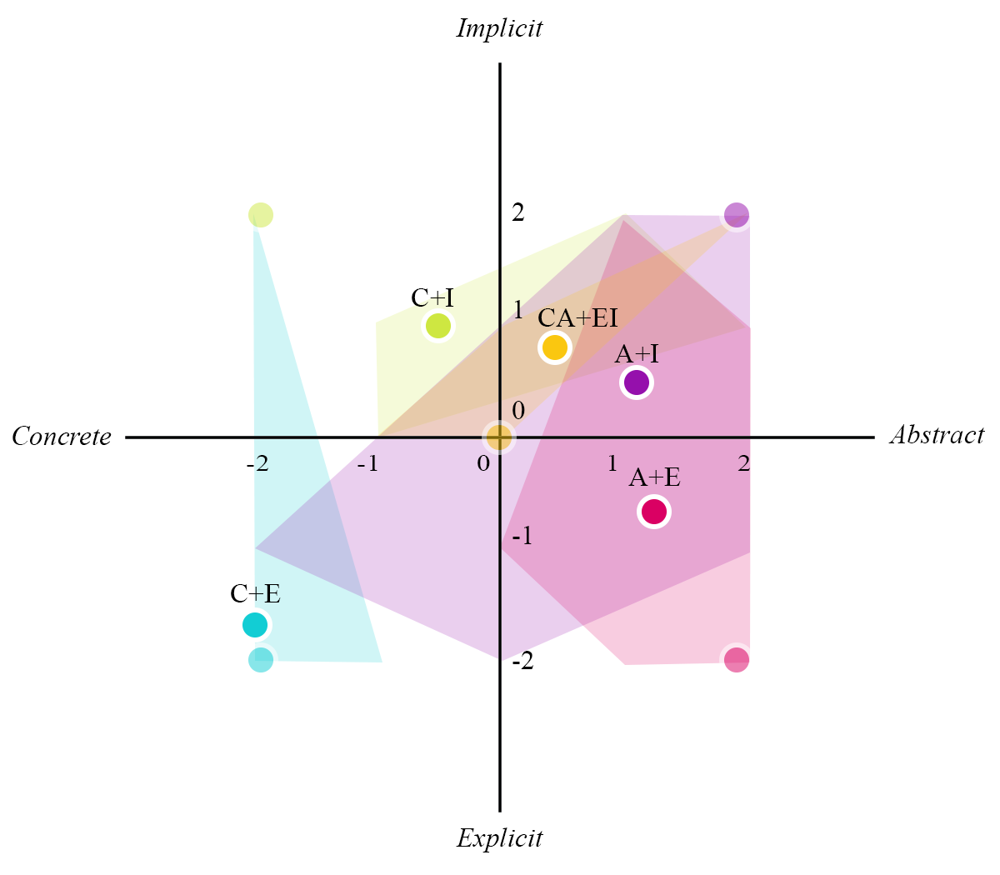

Abstractness and Implicitness in Mood Visualizations
Challenge
The COVID-19 crisis forced employees to shift from the traditional office to the home office. When working in the home office, employees miss spontaneous informal moments that normally happen. Research shows that the lack of informal moments leads to a low sense of social connectedness. Because working from home might become the new standard it is important to gather knowledge on how to trigger informal communication remotely. The aim of this research was to study the effects of visual mood information on the openness for informal interactions.
Methods
Based on earlier research, I expected that the more implicit and abstract the information is, the easier it becomes to approach a colleague due to the higher level of awareness. Eight controlled experiments were carried out in which participants were exposed to five different mood visualizations. After the experiment, semi-structured interviews were conducted in order to collect data on the differences between the ‘interpretation’, ‘response reaction’, and ‘incentive for informal interactions’.

During the first phase of the experiment, participants were introduced to the “sensitization story”. This method enriches the story of the design, makes it more credible, and helps the participants to understand and familiarize with the context of the prototype that they were exposed to in the next phase. During the second part, participants had to use the interactive application with the visualizations. They were asked about their interpretation and understanding of the visualizations, to perform a task, and to rank the visualizations on the level of implicitness and abstractness.

Outcome
The results from the experiments and interviews showed that visual mood information enables participants to make an estimation on the openness for informal interactions. Nevertheless, information should be presented in a way participants are able to understand and read it. This increases their self-confidence and stimulates them to approach in a more direct way. The results of the study led to an advice for designers when designing visual mood information to trigger informal interactions.


More information
If you’d like to know more about this research, or request the research paper ‘Abstractness and Implicitness in Mood Visualizations to trigger Informal Communication in the Future Office’, please contact me.